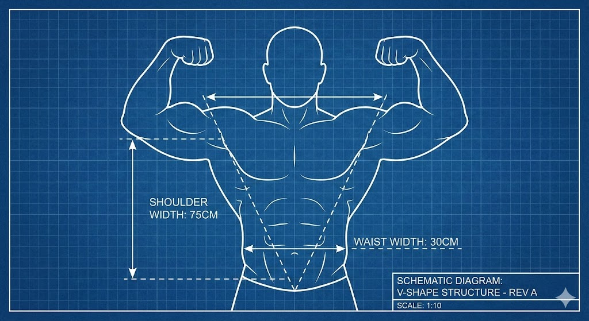
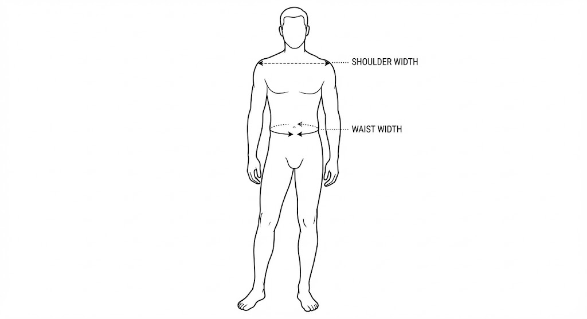
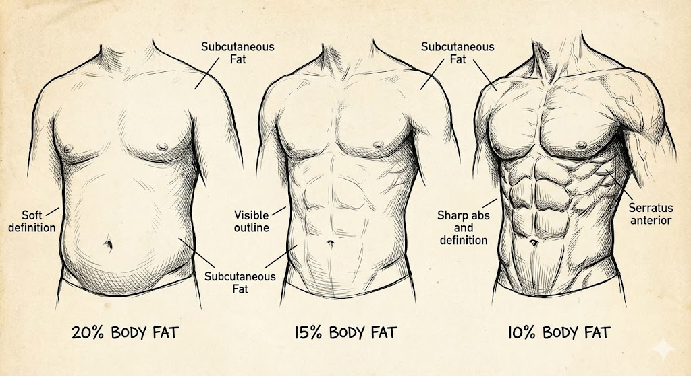
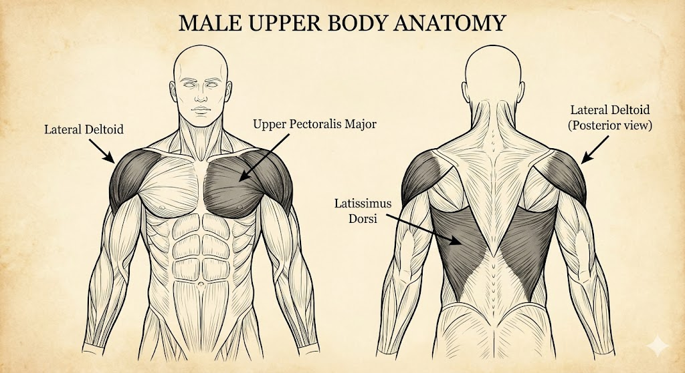
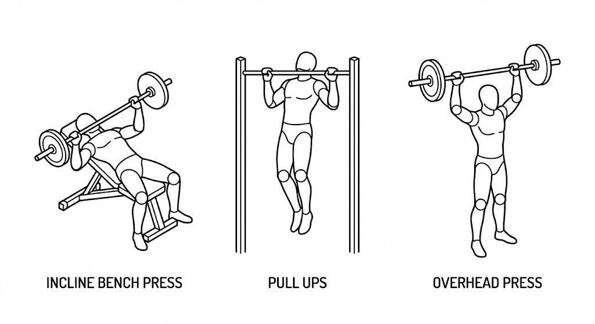
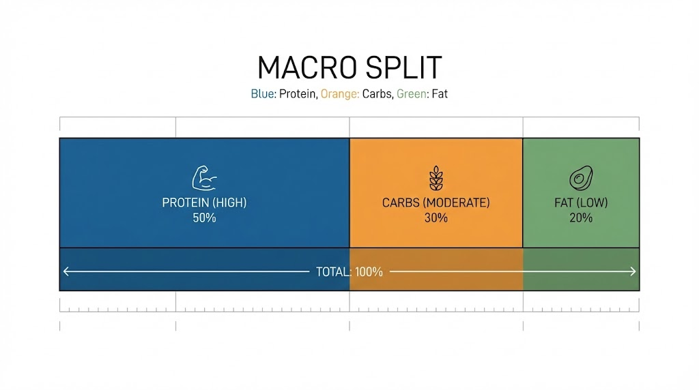
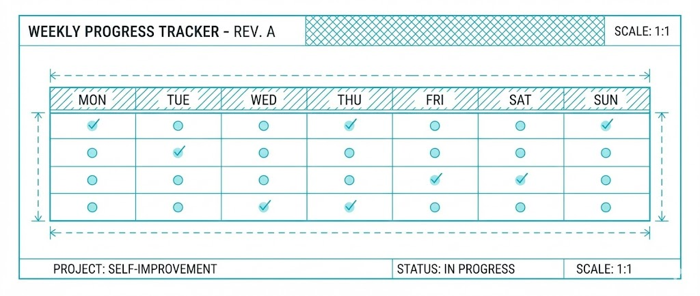

VOL. 02 - 2025
THE
ARCHITECT
VOLUME 2: PHYSIQUE
The Body Architecture: Science-Based Hypertrophy.
DAFTAR ISI
- 1. PENDAHULUAN: The Evolutionary Signal 03
- 2. CHAPTER 1: THE AESTHETIC BLUEPRINT 04
- 3. CHAPTER 2: THE PHYSICS OF MUSCLE GROWTH 06
- 4. CHAPTER 3: THE WORKOUT PROTOCOL 08
- 5. CHAPTER 4: NUTRITIONAL BIOCHEMISTRY 12
- 6. CHAPTER 5: SUPPLEMENTATION & RECOVERY 15
- 7. ACTION PLAN 17
DISCLAIMER
Buku ini disusun berdasarkan riset kinesiologi dan teori estetika. Namun, penulis bukan dokter medis atau pelatih fisik bersertifikat. Semua protokol kesehatan (terutama yang melibatkan perubahan diet dan latihan beban intensitas tinggi) harus dilakukan dengan bijak dan menyesuaikan kondisi tubuh masing-masing. Penulis tidak bertanggung jawab atas cedera. Konsultasikan dengan profesional jika diperlukan.
© 2025 PrimeTheory.Lab. All rights reserved.
PENDAHULUAN:
THE EVOLUTIONARY SIGNAL
Pernah mikir gak, kenapa cowok yang badannya "V-Shape" (Bahu lebar, pinggang kecil) itu otomatis kelihatan keren?
Fig 0.1: Rasio Bahu-Pinggang sebagai Sinyal Dominasi Biologis.
Bukan karena majalah fitness. Ini soal Evolusi, Bro. Jaman purba dulu, rasio bahu lebar itu tandanya lo jago berantem dan jago berburu. Cewek secara biologis "diprogram" buat nyari pasangan yang fisiknya kelihatan mampu ngelindungin dia dan anak-anaknya.
Di jaman sekarang, kita emang gak berburu Mamut. Tapi sinyal bawah sadar itu tetep nyala. Badan atletis nunjukin kalau lo punya disiplin tinggi, sehat, dan dominan.
Volume 2 ini bukan buat jadi binaraga yang badannya kegedean sampe susah garuk punggung. Kita bakal bangun fisik "Greek God": Ramping, Berotot, Simetris, dan Siap Tempur.
CHAPTER 1:
THE AESTHETIC BLUEPRINT
Kita main angka ya, biar jelas targetnya. Jangan cuma "pengen sehat".
1. The Adonis Index (Golden Ratio)
Fig 1.1: Titik Ukur Lingkar Bahu & Pinggang.
Target visual cowok ganteng itu ada rumusnya: 1.618.
- Ukur Bahu Lo: Ukur keliling bahu di bagian paling lebar (tangan rileks di samping).
- Ukur Pinggang Lo: Ukur pas di puser.
- TARGET: Lingkar Bahu lo harus 1.618 kali lipat dari Lingkar Pinggang.
Contoh: Kalau pinggang lo 80 cm, target bahu lo minimal 129 cm. Kejar angka itu.
2. Body Fat Percentage (Kadar Lemak)
Asal lo tau, semua orang itu punya Sixpack. Cuma ketutup lemak doang.
- 15-20% (Biasa Aja): Sehat sih, tapi otot lo gak tajem. Muka lo mungkin masih agak chubby atau puffy.
- 10-12% (THE SWEET SPOT): Ini target kita. Di level ini, Sixpack lo nongol, rahang lo tajem, urat tangan keluar, tapi hormon lo tetep sehat dan "adik" lo tetep bangun pagi.
- < 8% (Kering Kerontang): Jangan deh. Ini buat kompetisi doang. Lo bakal gampang sakit, lemes, dan libido lo mati. Gak High Value.
MODULE TWO
PHYSICS OF
GROWTH
(Mekanisme Hipertrofi & Beban)
Dengerin baik-baik: Otot lo GAK TUMBUH pas lo lagi ngangkat beban. Otot lo tumbuh pas lo lagi TIDUR, buat nambal kerusakan yang lo bikin pas latihan.
3 Cara Bikin Otot Gede
- Tegangan Mekanik: Angkat beban berat yang maksa otot lo kerja keras. Ini pemicu utamanya.
- Kerusakan Mikro: Serat otot lo robek halus pas lo nurunin beban pelan-pelan. Tubuh bakal nambal robekan ini pake serat yang lebih kuat.
- Metabolic Stress (Pump): Pas otot lo rasanya panas kebakar. Itu laktat numpuk.
HUKUM WAJIB: PROGRESSIVE OVERLOAD
Ini harga mati. Kalau bulan ini lo angkat 10kg, dan bulan depan lo masih angkat 10kg, otot lo GAK BAKAL gede. Badan lo itu pinter (dan males); kalau bebannya gak nambah, dia gak ngerasa perlu gedein otot.
CARA NAMBAH BEBAN (PILIH SATU TIAP MINGGU):
- Tambah Berat: Minggu ini 10kg -> Minggu depan coba 12kg.
- Tambah Repetisi: Minggu ini 10kg x 8 kali -> Minggu depan 10kg x 10 kali.
- Perbaiki Teknik: Minggu ini angkat cepet -> Minggu depan angkat pelan (tahan 3 detik pas turun).
RPE: Seberapa Capek Harus Latihan?
RPE (Rate of Perceived Exertion) itu simpelnya adalah Skala Sisa Tenaga. Ini cara kita ngukur intensitas latihan tanpa perlu alat canggih.
Kunci hipertrofi (pembesaran otot) itu bukan "asal capek", tapi seberapa dekat lo sama batas kemampuan lo (Failure). Kita pake skala 1-10:

- RPE 10 (Mampus/Failure): Gagal total. Lo gak bisa angkat lagi walau ditodong pistol. Biasanya teknik lo ancur di sini.
- RPE 8-9 (TARGET KITA): Latihan sampe berat banget, tapi masih sisa 1-2 repetisi di "tangki bensin" lo sebelum gagal.
KENAPA? Riset bilang hasilnya sama kayak RPE 10, tapi lo gak gampang cedera dan gak gampang burnout. Jadi lo bisa latihan konsisten.
MODULE THREE
THE WORKOUT
PROTOCOL
(The Aesthetic 4 & Jadwal Latihan)
Lupain latihan "Bro-Split" (Senin dada doang, Selasa punggung doang). Itu buat yang pake steroid. Buat kita yang natural, frekuensi terbaik itu melatih tiap otot 2 kali seminggu.
THE AESTHETIC 4 (Otot Ganteng)
Fig 3.1: Target Otot Kunci untuk Ilusi V-Taper.
Biar badan lo ngebentuk V-Taper, fokus hajar 4 otot ini:
- Bahu Samping (Lateral Delts): Bikin badan lo lebar ke samping.
- Sayap Atas (Upper Lats): Bikin punggung lo ngebentuk huruf V.
- Dada Atas (Upper Chest): Bikin dada lo tebel pas pake kaos kerah V atau kemeja.
- Perut (Abs): Jaga pinggang tetep kecil.
JADWAL LATIHAN: UPPER / LOWER SPLIT
Contoh: Senin, Selasa, Kamis, Jumat. (Rabu & Weekend Istirahat).
SENIN: UPPER BODY A (Fokus Kekuatan)
| LATIHAN | SETS | REPS |
|---|---|---|
| Incline Dumbbell Press (Dada Atas) | 3 | 6-8 |
| Lat Pulldown / Pull Up (Sayap) | 3 | 8-10 |
| Overhead Press (Bahu Depan) | 3 | 8-10 |
| Cable Row (Punggung Tebal) | 3 | 10-12 |
| Lateral Raises (Bahu Samping - WAJIB) | 4 | 15-20 |
SELASA: LOWER BODY A (Kaki & Perut)
| LATIHAN | SETS | REPS |
|---|---|---|
| Squat / Leg Press | 3 | 6-8 |
| Romanian Deadlift (Paha Belakang) | 3 | 8-10 |
| Calf Raises (Betis) | 4 | 15 |
| Hanging Leg Raises (Abs) | 3 | Sampe Gagal |
KAMIS: UPPER BODY B (Fokus Gedein Otot)
| LATIHAN | SETS | REPS |
|---|---|---|
| Flat Bench Press / Mesin | 3 | 10-12 |
| Dumbbell Row | 3 | 10-12 |
| Lateral Raises (LAGI!) | 4 | 15-20 |
| Face Pulls (Bahu Belakang) | 3 | 15 |
| Bicep Curl & Tricep Pushdown | 3 | 12 |
JUMAT: LOWER BODY B
| LATIHAN | SETS | REPS |
|---|---|---|
| Lunges / Split Squat | 3 | 10-12 |
| Leg Curl | 3 | 12-15 |
| Plank | 3 | 1 Menit |
MODULE FOUR
NUTRITIONAL
BIOCHEMISTRY
(Cara Hitung Kalori & Macro)
Nge-gym cuma ngerusak otot. Makanan yang ngebangun ulang otot lo jadi lebih gede.
1. Itung Kalori Lo (Jangan Asal Makan)
Cari di Google: "TDEE Calculator". Masukin data lo. Dapet angka maintenance (misal: 2000 kalori).
- Mau Kurus (Cutting): Kurangi 500. Makan 1500 kalori.
- Mau Gede (Bulking): Tambah 300. Makan 2300 kalori. Jangan napsu tambah 1000, ntar jadi lemak semua.
2. MACRO NUTRIENTS (Isi Piring Lo)
PROTEIN (Batu Bata)
Wajib 1.6 - 2.2 gram per Kg Berat Badan. Sumber: Dada ayam, Putih Telur Rebus, Tempe, Whey, Ikan.
LEMAK (Hormon)
Minimal 0.6 gram per Kg. Lemak sehat penting buat bikin Testosteron lo. Sumber: Kuning telur, Alpukat, Minyak Zaitun.
KARBO (Bensin)
Sisanya. Buat tenaga ngangkat besi. Sumber: Nasi putih, Kentang, Buah.
3. THE INDO-DIET PROTOCOL
Susah diet di Indo? Gak juga. Gini caranya biar tetep sixpack walau makan di luar:
STRATEGI WARTEG
- Nasi: Bilang tegas: "Nasi setengah ya Bu."
- Protein: Ambil minimal 2 macem (Telur + Ayam Suwir).
- Sayur: WAJIB ambil Capcay atau Sup.
- Kuah: Dikit aja "nyemek".
- Gorengan: HARAM. 1 Kerupuk = 150 Kalori. 1 Bakwan = 250 kalori. Stop ginian.
STRATEGI PADANG
- Nasi: Minta separo.
- Lauk: Ayam Pop (kulit buang), Ayam Bakar, atau Ikan Bakar. Jangan Rendang/Gulai.
- Minum: Air putih atau Es Teh Tawar.
CHAPTER 5:
SUPPLEMENTATION
Jangan ketipu marketing suplemen. Ini daftar jujur:
TIER S (Wajib Punya)
- Creatine Monohydrate: Nambah tenaga ledak, bikin otot kelihatan penuh. Dosis: 5g tiap hari.
- Whey Protein: Makanan praktis. Kalau lo sibuk, minum ini.
TIER A (Bagus Buat Kesehatan)
- Multivitamin: Jaga-jaga kalau kurang makan buah.
- Kopi Hitam (Kafein): Pre-workout alami terbaik. Minum 30 menit sebelum gym.
TIER F (Sampah / Buang Duit)
- BCAA: Gak guna kalau protein harian lo cukup.
- Mass Gainer: Isinya gula doang. Mending makan nasi padang + susu.
- Fat Burner: Gak ngefek. Satu-satunya fat burner itu Defisit Kalori.
TIDUR: WAKTU LO TUMBUH
Lo gak tumbuh di gym. Lo tumbuh pas tidur.
- Tidur 7-9 jam. Kurang dari 6 jam = Testosteron anjlok.
- Kamar gelap total & adem.
- No HP: Jangan main HP 30 menit sebelum tidur.
ACTION PLAN:
MINGGU PERTAMA

HITUNG
Itung TDEE lo. Tentuin target kalori (Cutting/Bulking).
BELANJA
Belanja. Beli Creatine, stok telur, sama dada ayam di kulkas.
MULAI GYM
Mulai nge-gym pake program "Upper Body A". Bawa HP, catet beban angkatan lo.
FOTO
Foto badan lo sekarang (Before). Jangan kempisin perut. Liat bedanya 3 bulan lagi.
END OF VOLUME 2
Lanjutkan ke Volume 3 buat belajar cara berpakaian (Style).